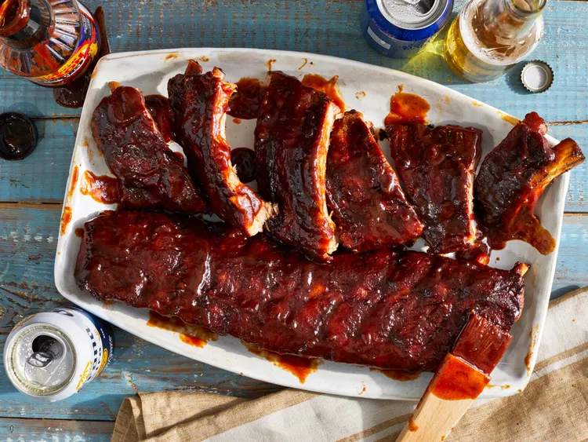
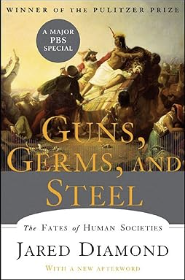
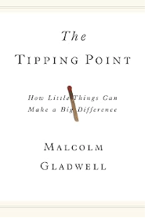
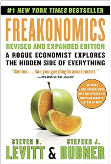
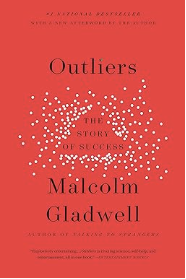

A few sentences about a trip or getaway that you took in the past few years:
Over a decade ago, I traveled to Tanzania and summited Mt. Kilimanjaro, the roof of Africa. It was week-long adventure and I saw the most amazing flora and fauna. The actual climb up the mountain took me five days and the air got so thin that I actually developed mountain sickness causing me to skip my malaria medication in the process. As a result, when I returned to my hotel in Moshi, I developed malaria and had to travel to a remote village to see a doctor. Fun albeit scary times.
A bulleted list of your 3 favorite pet names and what type of animal goes with each:
A link to the website of your favorite restaurant with a few lines about why it's your favorite.
AyawaskaThe above link is to a restaurant called Ayawaska. It's a Peruvian restaraunt in my home town here in Novato, California, but that's not why I like it. I like it because it sits on one of the highest point in Novato and we get a good look at the rest of the town from there. They also have really great cocktails.
An image of your favorite food with a few lines talking about how you like to serve/eat it. The text should wrap around the right side of the image.
 I think in another life I was a Southerner because I tend to really like Southern BBQ. When I make baby back ribs I use a pressure cooker to create that falling off the bone tenderness and then throw on the grill for that smokey taste.A table with 4 columns that contains the following data about 4 of your favorite books. For each book, data in each column to include: name of the book; an image of the cover; the author of the book; and a one or two-line summary of the book.
| Name of book | Cover | Author | 1-2 Line Summary |
|---|---|---|---|
| Guns, Germs, and Steel: The Fates of Human Societies |  | Jared Diamond | Until around 11,000 BC, all peoples were still Stone Age hunter/gatherers. At that point, a great divide
occurred in the rates that human societies evolved. In Eurasia, parts of the Americas, and Africa,
farming became the prevailing mode of existence when indigenous wild plants and animals were domesticated by
prehistoric planters and herders. As Jared Diamond vividly reveals, the very people who gained a head start
in producing food would collide with preliterate cultures, shaping the modern world through conquest, displacement,
and genocide.
Source: Amazon |
| The Tipping Point: How Little Things Can Make a Big Difference |  | Malcolm Gladwell | The tipping point is that magic moment when an idea, trend, or social behavior crosses a threshold, tips,
and spreads like wildfire. Just as a single sick person can start an epidemic of the flu, so too can a small
but precisely targeted push cause a fashion trend, the popularity of a new product, or a drop in the crime rate.
This widely acclaimed bestseller, in which Malcolm Gladwell explores and brilliantly illuminates the tipping
point phenomenon, is already changing the way people throughout the world think about selling products and
disseminating ideas.
Source: Amazon |
| Freakonomics Revised and Expanded Edition: A Rogue Economist Explores the Hidden Side of Everything |  | Steven D. Levitt and Stephen J. Dubner | Which is more dangerous, a gun or a swimming pool? Which should be feared more: snakes or french fries?
Why do sumo wrestlers cheat? In this groundbreaking book, leading economist Steven Levitt—Professor of
Economics at the University of Chicago and winner of the American Economic Association’s John Bates Clark
medal for the economist under 40 who has made the greatest contribution to the discipline—reveals that the
answers. Joined by acclaimed author and podcast host Stephen J. Dubner, Levitt presents a brilliant—and
brilliantly entertaining—account of how incentives of the most hidden sort drive behavior in ways that turn
conventional wisdom on its head.
Source: Amazon |
| Outliers: The Story of Success |  | Malcolm Gladwell | In this stunning book, Malcolm Gladwell takes us on an intellectual journey through the world of "outliers"--
the best and the brightest, the most famous and the most successful. He asks the question: what makes
high-achievers different?
Source: Amazon |